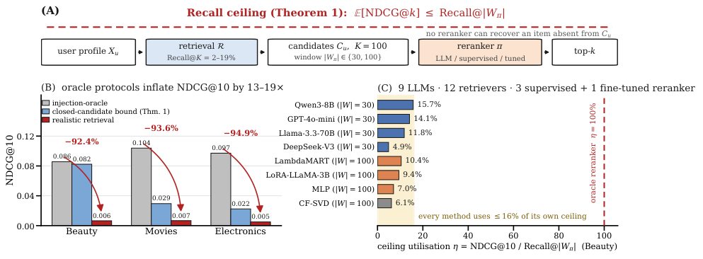

The Recall Ceiling of LLM Recommendation Reranking (LLM 推荐重排的召回天花板)
- 会议/期刊: CIKM 2026 (Oral)
- 作者与机构: Zhaohui Wang, University of Southern California (Viterbi School of Engineering)
- 推荐链路定位: 重排 (Reranking)，兼论召回-重排级联的瓶颈归属
- 研究方向: 大语言模型推荐 / 去偏公平与工业评测
- 论文原文: https://arxiv.org/abs/2609.27953v1
- 开源代码: https://github.com/GeoffreyWang1117/recall-ceiling-cikm2026
TL;DR (1分钟核心速览)
本文是一篇方法论批判 + 理论界定论文，而非新模型论文。作者指出：大量 LLM 推荐重排工作采用"注入 Oracle"协议（把 ground-truth 塞进候选集或与采样负例对比打分），该协议在三个 Amazon 主数据集上把 NDCG@10 高估 92–95%。根因是召回天花板：真实检索在 K=100 时仅覆盖 2–19% 的相关物品，由重排不等式可证任意闭候选重排器满足 \(\mathbb{E}[\mathrm{NDCG}@k] \le \mathrm{Recall}@|W_\pi|\)。在 168× 参数跨度、12 种检索器、3 类监督重排器、LoRA 微调与 LLM+CF 融合的全维度压力测试下，无一配置在 Beauty/Movies/Electronics 上显著超越 CF。作者据此提出 RAEP 召回感知评测协议。
Background & Motivation (背景与核心矛盾)
- 主流范式: LLM 重排（zero-shot 列表重排、指令微调、LoRA 微调）被广泛报告在推荐任务上优于传统 CF，评测多采用"注入式 Oracle"或"采样负例打分"。
- 前人局限: ① 注入协议使候选集召回率恒为 100%，彻底屏蔽了上游检索的失败；② 采样负例协议（1 正 vs 1000 负）同样使 scored set 内召回平凡为 1，二者都无法暴露部署时的真实性能。
- 核心洞察 (Key Insight): 重排器无法排序它看不见的物品。作者用重排不等式 (rearrangement inequality) 给出一个组合学（而非信息论）的紧上界，并进一步定义天花板利用率 \(\eta\)，从而把"召回失败"与"重排失败"两个耦合效应解耦。
- 本文切入点: 不提出新重排器，而是量化 Oracle 与真实检索的鸿沟、证明该鸿沟在模型容量/训练信号/检索质量/评测范式/候选预算五个维度上均不可逾越，并给出可操作的评测协议 RAEP。

Method (核心方法设计)
1. 整体框架 (Overall Architecture)
论文的分析闭环为：先定义闭候选重排器（输出仅为检索集 \(C_u\) 子列表 \(W_\pi\) 的置换，其余候选按检索序追加于下），再用定理 1 给出其上界，再用 \(\eta\) 度量重排器对自身天花板的利用比例，最后以五维压力测试证伪"重排优化可破天花板"的假设，并落地为 RAEP 四组件协议（召回诊断分级 / RA-NDCG / \(\eta\) / 自适应 K）。
flowchart TD
A["用户画像 X_u + 全库 I"] --> B["检索器 R：K=100 候选 C_u<br/>Recall@100 = 2–19%"]
B --> C["重排窗口 W_π ⊆ C_u<br/>|W_π| ∈ {30, 100}"]
C --> D["重排器 π：LLM / 监督 / LoRA"]
D --> E["Top-k 输出"]
B -.-> F["定理1 上界 Recall@|W_π|"]
D -.-> G["η = NDCG@10 / Recall@|W_π| ≤ 16%"]2. 关键设计拆解 (Key Designs)
- 定理 1：召回天花板（Recall Ceiling）：针对"重排器能力"与"候选集质量"被混为一谈的痛点，作者对任意形如 \(M@k(\sigma,Y_u)=\sum_{i\ge1} a_i b_i / Z(Y_u)\)（\(a_i\ge0\) 为增益、\(b_1\ge b_2\ge\cdots\ge0\) 为位置折扣）的 top-k 指标，用重排不等式证明最优置换必为"把 \(W_\pi\cap Y_u\) 全部前置"的 Oracle 置换，故
其价值在于一个证明覆盖 NDCG/Hit/Recall/MAP/RBP/ERR，无需逐指标分析；且上界由 \(|W_\pi|\)（重排器实际看到的窗口）而非检索预算 \(K\) 决定——这是本文相对"检索决定重排"这一朴素直觉的关键增量。
- 两个特化推论与 \(\eta\) 利用率：LOO 单正例下退化为 \(\mathbb{E}[\mathrm{NDCG}@k] \le \mathrm{Recall}@|W_\pi|\)（因 \(\mathbb{E}[\mathrm{NDCG}|R_u{=}1]\le1\)）；多正例下退化为恢复集 IDCG 比 \(\mathbb{E}[\mathrm{IDCG}_k(|W_\pi\cap Y_u|)/\mathrm{IDCG}_k(|Y_u|)]\)。据此定义
即重排器榨取了自身可达空间的多少。必须用各自窗口作分母：列表式 LLM 只看 top-30，若误用 Recall@100 作分母会把 \(\eta\) 低估 2.6–2.8×（Beauty 上 Recall@30=3.21% vs Recall@100=8.23%）。
- 训练目标、负采样与推理效率：本文无自研损失函数；监督重排器（LambdaMART/RankNet/MLP）以 CF embedding 为特征、在与评测用户不相交的 250 用户训练池上训练（这是对前版数据泄漏的自我更正）。LoRA 配置为 LLaMA-3.2-3B-Instruct、\(r{=}16/\alpha{=}32\) QLoRA、作用于 \(\{q,k,v,o\}\) proj、pointwise 二分类头、3 epoch。推理成本方面：DeepSeek-V4 开启 thinking 后耗时 200–500 s/用户（vs 无思考 <1 s），成本约 37×（$4.75 vs $0.13 / 500 用户），而效果反而显著更差。
Experimental Setup & Evaluation Protocol (实验设置与评估协议)
- 数据集与预处理（Amazon 系列均 3-core 过滤 + 时序 LOO 划分；\(|\mathcal{I}|\) 仅计训练集中出现的可检索物品）：
| 数据集 | #Users | #Items | #Interactions | 密度 | 特征/场景说明 |
|---|---|---|---|---|---|
| Beauty | 938 | 1,416 | 8,241 | 0.62% | 商品，含标题 |
| Movies | 1,998 | 53,709 | 358,587 | 0.33% | 商品，大目录 |
| Electronics | 2,000 | 28,981 | 183,913 | 0.32% | ASIN-only，无标题（LLM 空对照） |
| MovieLens-25M | 10,000 | 19,886 | 3,949,023 | 1.99% | 电影，含类型元数据 |
| MIND News | 86,746 | 20,212 | 2,278,768 | 0.13% | 新闻点击隐式反馈 |
- 数据划分与防穿越: Amazon 采用
3-core+ 时序Leave-One-Out（倒数第二交互作验证）；监督重排器额外抽取 250 训练用户与 500 评测用户完全不相交，测试物品在检索时不可见。 - 排名评测协议: 无偏
Full-Ranking语义下的真实检索候选集（\(K{=}100\)），与Injection-Oracle（强制注入正例）和Sampled-Negative（1 正 vs 固定负例池）形成三方对照。指标 NDCG@10 为主，Hit@10 / MAP@10 为辅；统计检验用 bootstrap 95% CI（1,000/10,000 次重采样）+ Wilcoxon signed-rank + Holm-Bonferroni 多重比较校正。 - 对比基线与超参: 12 种检索器（Popularity/ItemKNN/BPR-MF/CF-SVD/LightGCN-Tuned/SimGCL/SGL/DirectAU/MultiInterest/MultiSource-RRF/SASRec/BERT4Rec），9 个 LLM（Gemma3-4B、Qwen3-8B/32B、GPT-4o-mini、Llama-3.3-70B、DeepSeek-V3-671B、DeepSeek-V4-Pro/Flash、Kimi-K2），3 类监督重排器 + 1 个 LoRA 微调 LLM；CF-SVD 用 128 维 TruncatedSVD；默认 \(n{=}500\)、seed=42。
Key Experimental Results (实验关键数据)
1. 主实验对比 (Main Results)
表 A：Oracle vs. 真实检索的 NDCG@10 鸿沟（Gemma3-4B, \(K{=}100\), \(n{=}500\)）
| Dataset | CF Base | Injection-Oracle [95% CI] | Realistic [95% CI] | 闭候选上界 | Gap |
|---|---|---|---|---|---|
| Beauty | .0050 | .0856 [.069,.103] | .0065 [.003,.012] | .0823 | 92.4% |
| Movies | .0086 | .1039 [.095,.113] | .0067 [.004,.009] | .0295 | 93.5% |
| Electronics | .0042 | .0971 [.088,.107] | .0050 [.003,.008] | .0224 | 94.9% |
表 B：Beauty 上全类型重排器横向对比（真实检索，\(n{=}500\)；\(\eta\) 以各自窗口为分母）
| Method | Size | \(\lvert W\rvert\) | NDCG@10 | \(\eta\) | \(p\) vs CF |
|---|---|---|---|---|---|
| CF-Score | — | 100 | .0051 | 6.1% | — |
| Qwen3-8B | 8B | 30 | .0051 | 15.7% | n.s. |
| Qwen3-32B | 32B | 30 | .0050 | 15.4% | .655 |
| GPT-4o-mini | ~8B | 30 | .0045 | 14.1% | .374 |
| Gemma3-4B | 4B | 30 | .0045 | 14.1% | .500 |
| Llama-3.3 | 70B | 30 | .0038 | 11.8% | .484 |
| DeepSeek-V3 | 671B | 30 | .0016 | 4.9% | .093 |
| LambdaMART | — | 100 | .0086 | 10.4% | .142 |
| RankNet | — | 100 | .0085 | 10.3% | .142 |
| LoRA-LLaMA-3B | 3B | 100 | .0078 | 9.4% | .191 |
| 闭候选上界 | — | 100 | .0823 | 100% | — |
| Injection-Oracle | — | — | .0856 | — | — |
表 C：检索器 Recall@100 (%) 扫描（\(n{=}500\)，加粗为该列最优）
| Method | Beauty | Movies | Electronics |
|---|---|---|---|
| CF-SVD | 8.23 | 2.99 | 2.56 |
| ItemKNN | 8.37 | 3.64 | 2.04 |
| LightGCN-Tuned | 12.33 | 3.84 | 2.90 |
| SimGCL | 5.19 | 3.78 | 2.38 |
| SGL | 8.43 | 4.31 | 2.35 |
| DirectAU | 7.95 | 4.81 | 1.88 |
| MultiInterest | 9.62 | 3.43 | 3.13 |
| MultiSource-RRF | 10.12 | 4.45 | 2.93 |
2. 消融实验 (Ablation Study)
| 消融维度 | 配置 | 关键结果 | 结论 |
|---|---|---|---|
| 提示工程 | P1/P2/P3 | Oracle 下 P2 比 P1 +52% (.0814 vs .0535)；真实下全部 ≤.004，P3 反低 22% | 提示收益仅在 Oracle 下存在 |
| 模型规模 | 4B→671B (168×) | Movies 上 .0098 (Qwen3-8B) → .0054 (Llama-3.3-70B) | 规模无正收益，大模型方向性更差 |
| 推理模型 | V4-Pro/Flash ±think | V4-Pro-think −43% (\(p{=}.004\))、V4-Flash-think −50% (\(p{=}.0007\)) | 思考链在无正例时无对象可推理 |
| 监督重排 | 6 数据集、不相交划分 | 无一显著优于 CF；Office 上 RankNet −81% (\(p{=}.003\)) | 前版"8.8% 召回阈值"系数据泄漏 |
| 分数感知提示 | GPT-4o-mini | Beauty −36.7%→−15.3%；\(\tau\) 从 .881 升至 .946 | 提升来自"更少推翻 CF"而非新信息 |
| 候选预算 | \(K\): 10→200 | Recall 0.82%→12.86%，LLM 相对 CF 从 −12.6% 恶化至 −54.4% | 天花板升高但注意力被稀释 |
| 混合检索 | CF+BM25+Dense RRF | Beauty 6.80%→7.80%（+15%），Movies/Electronics 反降 | 小目录微增，大目录噪声主导 |
| 学习式级联 | LambdaMART 12 特征 | Beauty +57% (\(p{=}.26\), \(\eta{=}9.7\)%)，Movies −44% | 特征重要性由 CF 类信号主导 |
| 多正例 | last-5 | Recall 9.21%/3.93%/2.83%，NDCG 仍 <.014 | 天花板结论不依赖 LOO 单正例 |
3. 关键实验发现 (Key Findings)
- Oracle 协议的系统性高估是量级性的，而非边际性的：三个主数据集上 Oracle 报出 .086–.104 的 NDCG@10，真实检索下坍缩至 .005–.007，差距 92.4–94.9%；且该差距在 NDCG/Hit/MAP 上一致为 76–96%，说明这不是指标选择问题。Beauty 上 8% 召回意味着 92% 的用户候选集中根本没有任何相关物品，对这些用户所有重排器的 NDCG 恒为 0。
- 双重失败：天花板低 + 利用率更低：Beauty 上 \(\eta\) 在 9 个 LLM 中仅 4.9%–15.7%，在 3 个全窗口监督重排器与 LoRA 微调模型中仅 7.0%–10.4%，无一超过 16%。这意味着即便把召回从 8.23% 提到 12.33%（LightGCN-Tuned），重排器能兑现的增量仍被 \(\eta\) 二次压缩——投资于提示/规模/训练信号，本质是在投资一个经验上极小的 \(\eta\)。
- "给 LLM 更多结构化信号"的收益机制是服从而非增益：分数感知提示把 Beauty 差距从 −36.7% 收窄到 −15.3%，但同时 Kendall \(\tau\) 从 .881 升至 .946；在评测用户上调参的 LLM+CF 凸融合最优解为 \(\lambda{=}0.7\)–\(0.8\)（CF 主导），最终恰好恢复 CF 本身（Beauty .0051）。这直接证伪了"LLM 欠缺 CF 分数信息"这一常见辩护。
Highlights, Limitations & Rating (亮点、对比与审稿评价)
- 与代表作对比 (vs. Prior Work): 相对 LLMRank [11]（同时报告两种 regime 但未测召回、未建立联系，\(K{=}20\)、目录仅 3,706/16,859）与 EXP3RT [16]（20 个 CF 候选、小目录），本文的增量是显式上界 + 实测鸿沟 + 部署级操作点（\(K{=}100\)、\(|\mathcal{I}|\) 达 53,709）。作者亦明确声明 TALLRec（单物品二分类、报 AUC）、GPT4Rec（生成查询后全库 BM25 检索）、RankGPT（段落检索而非推荐）不属于其批判范围——这种协议审计的严谨度在同类批判性论文中少见。
- 可迁移亮点: ① \(\eta\) 利用率指标可移植到任何"召回-精排"级联诊断，只需把分母换成重排器自身窗口的 Oracle 上界；② RAEP 四组件（CRITICAL/LOW/MODERATE/ADEQUATE 分级 + RA-NDCG + \(\eta\) + 自适应 K）可直接作为 LLM4Rec 论文的评测 checklist；③ 数据泄漏自查方法（重叠/不相交半集/独立干净池三协议复现）值得所有监督重排工作借鉴。
- 审稿级局限批判: ① 统计功效不足：\(n{=}500\) 下 92–97% 用户 NDCG 并列于 0，有效非零样本仅 15–40，作者自承无法检测 \(d<0.10\) 的效应，因此"无显著提升"部分等价于"无证据"，而非"证明无效"；② regime 外推风险：所测召回仅 2–19%，生产系统若召回 ≥30%（RAEP 的 ADEQUATE 档）则天花板显著放松，本文结论未必成立，作者对此有明确免责但削弱了实践指导力；③ Electronics 为 ASIN-only 空对照，其 LLM 结果（\(\tau{=}1.000\)）不构成语义重排证据，却被计入"三数据集均无提升"的总结论，略微放大了结论的覆盖面；④ 密度-召回回归仅 \(R^2{=}0.39\)（\(n{=}8\)），属描述性观察而非可预测模型。
- 四维评分: 创新性 ⭐⭐⭐⭐（定理本身不惊人，但 \(\eta\) 与协议审计的组合有真正的方法论价值）| 实验扎实度 ⭐⭐⭐⭐⭐（五维压力测试 + 自我更正数据泄漏 + 全量代码/JSON 开源，$1.24 API 成本可完全复现）| 方法清晰度 ⭐⭐⭐⭐⭐ | 落地价值 ⭐⭐⭐⭐（对 LLM4Rec 社区是一记必要的冷水，但受限于低召回 regime）